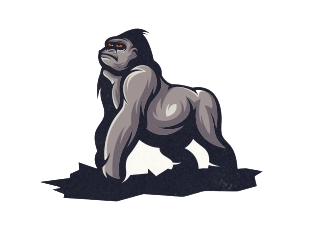

 Burna Boy
THE AFRICAN GIANT
 Burna Boy, is a Nigerian singer, songwriter, rapper, and dancer. He is one of the biggest and most successful African artists.
Burna Boy, is a Nigerian singer, songwriter, rapper, and dancer. He is one of the biggest and most successful African artists.
Here Is A Timeline Of Burna Boy's Career:
- 2012–2015: L.I.F.E and On a Spaceship
- 2018: Outside and O2 Academy Brixton performance
- 2019–present: Steel & Copper, African Giant, Twice as Tall and Love Damini
"Way I see it, everyone plays their own role in the world, and no role is more important than the other." - Burna Boy.
If you have time, you should read more about this incredible human being on his
Wikipedia entry.